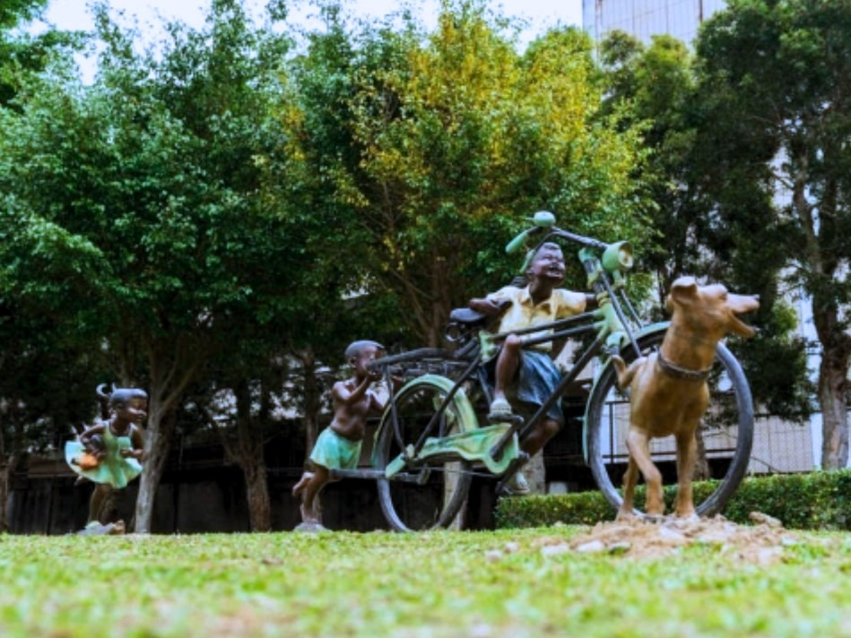

靜宜大學
位置圖
介紹
01、06、09
02、13
03、04、07、12
回首頁
Mobirise
靜宜大學公共藝術
校園這麼大，你有注意過有哪些公共藝術嗎?
位置圖
01
02
03
04
05
06
07
08
09
10
11
12
13
14
15
16
17
Ariel Moscovici
法籍雕塑家Ariel Moscovici出生於羅馬尼亞，對「宇宙創生」議題長期探索。
In head X 以「起源」、「初始」為主軸，探討宇宙萬物及人類與大自然共生共存的相互關係。
Ariel創作媒材十分多元，常使用石頭、木頭、泥塑及金屬，作品以幾何造型為主，運用抽象的概念及具象的架構
來詮釋人與時間、空間、自然之間的互存關係。
01.
腦際X In head X
不鏽鋼
(160x159x130cm 2021)
大草皮(靠近大停)
06.島7 Island VII
耐候鋼
(62.5x120x120cm 2004)
任垣一樓中庭
09.天地之間
Between Earth and Sky
鋼 (180x60x60cm 2001)
任垣二樓
蔡志賢
蔡志賢所從事的諸多藝術勞動中 , 女裝設計是最為人所熟知的。
對女裝的創作衝動 , 可能來自於對早逝母親的懷念 , 而對鋼鐵的興趣 , 則可能是對另一種材質的偏執狂愛。於是 , 柔軟的布和冷硬的鐵 , 成為目前創作擷取的兩極素材。
02.相對的境界
The State of Opposition
鐵
(470x730x105cm 1998)
大草皮附近(靠近大停)
13.開拓者 Explorer
鐵、不鏽鋼(510x375x130cm 1998)
主顧聖母堂下方的草皮
余燈銓
對余燈銓而言，創作向來是生活的縮影，從親情系列到童年系列的作品，都正好紀錄了不同面向的人生階段。
透過作品展現家庭的和樂社會的安詳，可觀察到藝術家想表現人生不同階段的溫暖記憶，並把生活融入創作並忠實的表達。
03.橋 青銅雕刻
(156x105x158cm 2004)
大草皮附近(靠近大停)

04.歡喜心向前走 青銅雕刻 (284x70x120cm 2004)
大草皮(靠近綜合球場)
07.夏日 青銅雕刻
(H180cm 2004)
任垣一樓中庭
12.心橋 青銅雕刻
(150x110x137dm 2000)
噴水池
製作：馬玉綺、曾順郁
© Copyright 2025 Mobirise. All Rights Reserved.